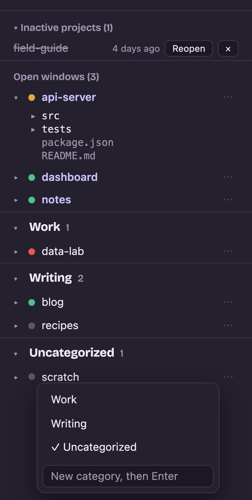
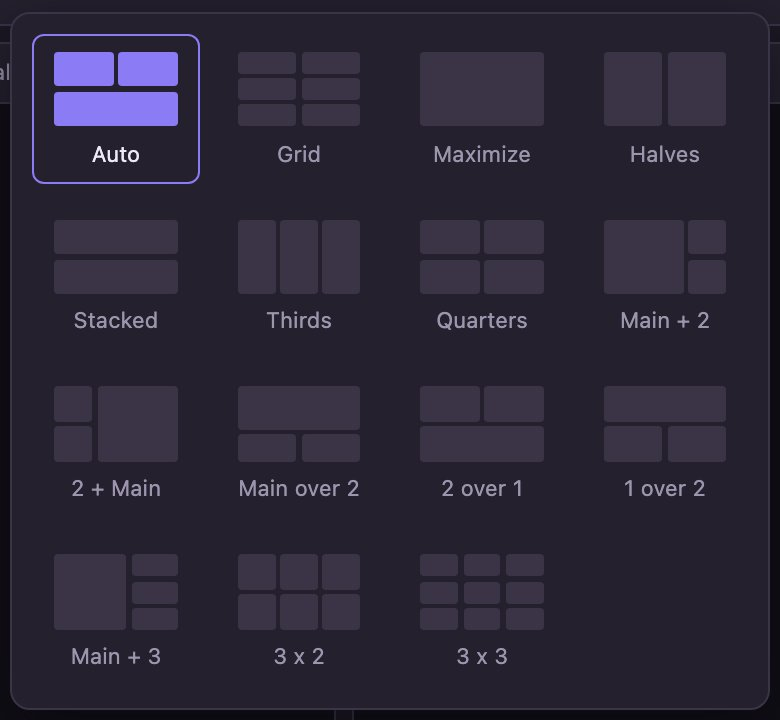
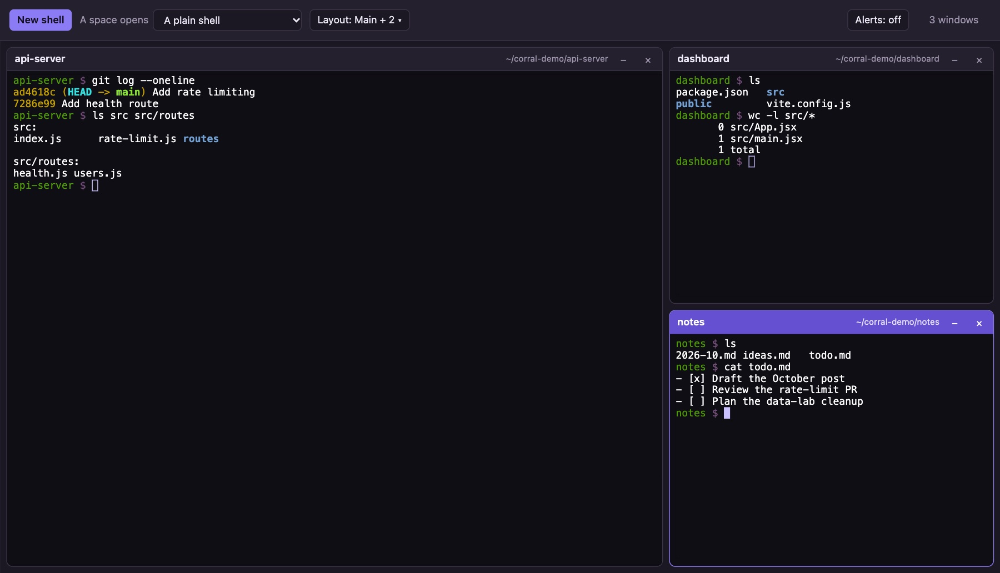
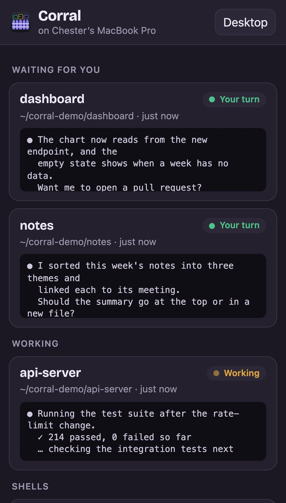

The problem it solves
Lots of projects, lots of agents, one screen
herdr keeps your projects as spaces and tracks what each agent is doing. Corral is for the moment you want to actually sit down and work across several of them: see them side by side, start or resume Claude Code with one click, and not lose anything when a tab closes.
"I have three agents running in three repos."
Watch them side by side
Open each space as a window and tile them with a layout like Halves, Main + 2, or 3 x 3. Status dots in the sidebar show which agent is working, idle, or blocked, so you know where to look next.
"Where was I in that project yesterday?"
Resume in one click
Set a space to open with "Claude Code, last session" and a click runs claude --continue in the
right folder. When Claude exits, the shell stays open in the same place.
"I closed the tab by accident."
Terminals that survive
Every shell lives in its own tmux session. Closing the tab, reloading, or restarting Corral leaves the work running, and reopening the page puts each window back where it was.
"My Mac restarted, and all my sessions are gone."
Restore them
Corral keeps a backup of the open windows and the Claude Code conversation in each. After a restart, a Restore button reopens every window in its folder, resuming its conversation.
"I stepped away, and Claude is waiting on me."
Answer from your phone
Through Tailscale, your phone lists every window on the Mac, with the ones waiting for you on top. Tap one to reply, dictate, or start Claude Code in another project.
"I have forty projects and can never find the one I want."
Sort them into groups
Make categories like Work or Writing, then right-click or drag spaces into them. Select several at once, or search and move every match. Each move can be undone.
"I closed that herdr space, and now it's gone."
Bring back inactive projects
Corral remembers every project folder it has seen. When a space disappears from herdr, the project moves to "Inactive projects" with a Reopen button that recreates the space.
"What's in this repo again?"
Peek at the files
Expand any space for a file tree, limited to that project's folder. Click a file to open it in a Mac app: Corral asks which one until you set a default for that type of file.
What you get
A browser workspace for herdr
Corral does not replace herdr. herdr keeps managing your spaces and agents; Corral reads herdr's list of spaces and opens its own terminals for them.
Every space in a sidebar
The sidebar lists each herdr space with its agent status, a search box, your categories, and the projects that are no longer open in herdr.
- Click a space to start Claude Code, Claude Code's last session, or a plain shell in its folder.
- Right-click a space, or use its ⋯ button, to file it under a category, or make a new one on the spot.
- Cmd-click or Shift-click to select several spaces and move them together.
- Expand a space to browse its files. Click one to open it in a Mac app, chosen from the apps macOS offers for it; tick "Always" to make that the default for the file type. Right-click to choose again.

Layouts for your windows
In the spirit of Sash, a layout is a set of zones, and each window sits in one. Auto picks a tiling from how many windows are open and the shape of the screen.
- Halves, Thirds, Quarters, Main + 2, Main over 2, 2 over 1, Main + 3, 3 x 3, and more.
- A plain grid with the number of columns and rows you choose.
- Drag a window's title bar onto another zone to move it there or swap.
- Minimize a window to the bottom bar. It keeps running, and one click brings it back. Drag the bar's top edge to make it bigger or smaller.

Real terminals, not a preview
Each window is a full terminal (xterm.js) connected to a shell on your Mac. Run Claude Code, a dev server, git, or anything else you would run in Terminal.
- Closing a window ends its shell. Minimizing, reloading, or closing the tab does not.
- Attach to any Corral shell from another terminal with
tmux -L corral attach -t wt-<id>. - Links printed in a terminal are clickable.
- Drag across text to copy it. Option-drag makes a browser selection instead.
- After a Mac restart, Restore reopens the windows you had, each resuming its Claude Code conversation.

On your phone
Keep working from any of your devices
With Tailscale, Corral opens on your phone, tablet, or another computer, and reaches your Mac over your own tailnet.
Every window, sorted by whose turn it is
The phone page lists each window on the Mac: Claude Code waiting for you first, then the ones still working, then plain shells, each with its last few lines.
- Tap a window for a full terminal, with the keys a phone lacks: Esc, Shift-Tab, Ctrl, arrows, and the numbers for Claude Code's menus. Use suggestion sends Claude Code's suggested next prompt in one tap.
- Type or dictate in the message box; a multi-line message goes in as one.
- History shows the scrollback as text you can select and copy.
- Start Claude Code in any project; it also waits, minimized, in the bottom bar on the Mac. Or restore windows after a restart.
- Add it to your Home Screen and it opens like an app.
Compared with Claude Code's Remote Control, it shows every window on the Mac without turning anything on, covers plain shells too, and reaches your Mac over your tailnet, encrypted end to end.

How it works
One small Node process
server.js serves the page, runs each shell in a pseudo-terminal attached to a tmux
session, and streams it to the browser over a WebSocket. Nothing leaves your machine, except to your own devices
when you turn on Tailscale access.
xterm.js draws each terminal and sends your keystrokes.
Node on 127.0.0.1:8777, with ws for the WebSocket.
A pseudo-terminal per window, attached to its tmux session.
A private tmux server that keeps every shell alive.
herdr api snapshot, and each space's project folder from
herdr's ~/.config/herdr/session.json. Corral polls herdr every 30 seconds, so it notices a space that
closes even while no page is open. herdr's session files are not a public API, so a future herdr release could
change them. Another device reaches Corral through tailscale serve, which forwards to the same
loopback address; each device gets its own tmux client, so tmux sizes a window for whichever device typed
last.Install
Run it in a minute
$ git clone https://github.com/ismayc/corral.git $ cd corral $ npm install # also makes node-pty's helper executable $ npm start # then open http://127.0.0.1:8777
- macOS. That is where Corral is built and tested. Linux may work but is untested.
- Node.js, tested with Node 24.
- herdr on your
PATHor at~/.local/bin/herdr, tested with herdr 0.9.3. - tmux, recommended (
brew install tmux). Without it, Corral still works, but shells end when the server stops. - Claude Code, if you want a click to start it.
| Variable | Default | What it does |
|---|---|---|
CORRAL_PORT | 8777 | Port to listen on (always on 127.0.0.1) |
CORRAL_TMUX_SOCKET | corral | Name of Corral's private tmux server |
HERDR_BIN | ~/.local/bin/herdr, else herdr on your PATH | Path to the herdr command |
CORRAL_SORT_BIN | scripts/herdr-sort-spaces | Script that re-sorts herdr spaces after a Reopen |
CORRAL_TAILSCALE | on | Set to 0 to refuse every request through Tailscale |
CORRAL_TAILSCALE_PORT | 8443 | The HTTPS port tailscale serve uses for Corral |
CORRAL_TAILSCALE_USERS | The login that owns this Mac in Tailscale | Comma-separated Tailscale logins allowed in |
On your phone and other devices
Have Tailscale forward to Corral from inside your tailnet, then open
https://<this Mac>.<your tailnet>.ts.net:8443/m on any device signed in to it. The desktop
page's On your phone button copies the link.
$ npm run tailscale # tailscale serve --bg --https=8443 http://127.0.0.1:8777
Security
Strict about who can reach it
A browser terminal can run any command by design, so Corral only answers your own machine and your own Tailscale login, and never takes a command from the page.
Loopback only
It listens on 127.0.0.1 and has no login of its own. Do not expose it
on another interface or behind any proxy other than tailscale serve.
Your tailnet, your login
Through Tailscale, a request must name this Mac's tailnet
address and carry an allowed Tailscale login, which tailscale serve sets and a sender cannot fake.
A public Funnel request carries none, so it gets nothing.
Other sites cannot drive it
Every request needs a loopback Host header,
which blocks DNS rebinding, and every change and terminal connection needs a loopback Origin.
A fixed menu of programs
The page can choose Claude Code, Claude Code with
--continue, or a shell. It never sends a command.
Only apps macOS offers
Opening a file hands it to macOS open with an app
that macOS lists for that file, checked again each time, or shows it in Finder. The page cannot name any
other program.
Names, never contents
The file tree lists names only and refuses any path whose real location, after resolving symlinks, is outside the project.
No borrowed identity
Started from inside Claude Code or a herdr pane, Corral strips
that session's variables (CLAUDE_CODE_*, HERDR_*, TMUX*) from every shell it starts.
Stays on your Mac
A few small files in ~/.local/share/corral, your browser's
local storage, and a private tmux server. The page loads no outside resources.
Limits
What it does not do
herdr's own terminals
herdr's API offers snapshots and events but no live byte stream, so Corral opens its own terminals rather than showing the ones inside herdr.
Scrollback after a restart
After a Corral restart, a window shows the current
screen. Older scrollback stays in tmux (tmux -L corral attach).
Undocumented re-sort
Reopen re-sorts herdr's spaces alphabetically through an
undocumented herdr method, workspace.move_block.